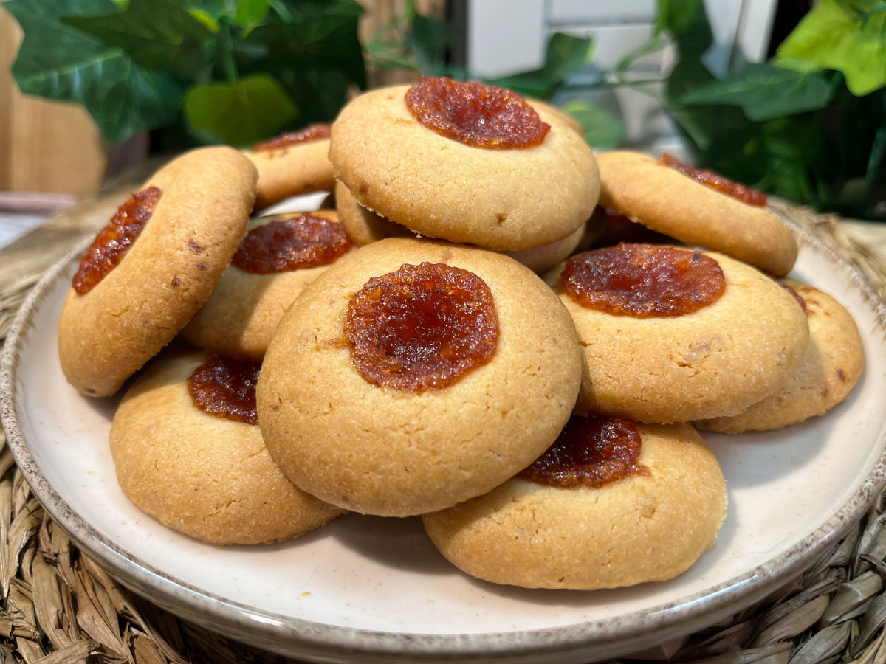

🧁 Rincón Pastelero
Inicio
Recetas
Productos
Contacto
Dificultad: Fácil
⏱️ 30 min
Receta
Cargando receta...

Ingredientes
PREPARACIÓN
¡Y listo! A disfrutar 🧁
Otras recetas que te pueden gustar
Alfajores de Maicena
Clásicos
Lemon Pie Tradicional
Tartas
Cheesecake de Frutos Rojos
Tartas